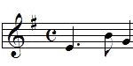
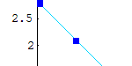
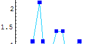

| Here is a tour of the necessary music theory. |  |
| Here is our current thinking about those aspects of fractals that music should exhibit in order to be called fractal. | |
| In describing the FractalComposer software we'll refer to MIDI files. What is MIDI? | |
| Here is an example of duration scaling. |  |
| Here is an example of pitch scaling. |  |
| Finally, here are examples of mistakes about fractal music. |
Return to Fractal Music Lab.